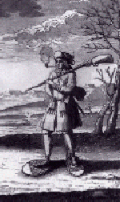
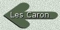

|

|
Robert Gagnon est baptisé le 1er
mars 1628, dans la paroisse Ste-Madeleine de La Ventrouze, dans le Perche.
Il est le fils de Jean Gagnon et de Marie Geoffroy. Robert
Gagnon arrive en Nouvelle-France vers 1655. Trois cousins Gagnon sont déjà établis dans la colonie, étant venus
rejoindre leur sœur et son mari.
 Le 2 avril 1656, il reçoit sur l’emplacement de la
future paroisse de Ste-Famille, à l’île d’Orléans, une terre de quatre arpents de
front, dont la profondeur va jusqu’à la route projetée (environ 64
arpents et demi). Cette propriété est située
face à la Côte de Beaupré. Le 2 avril 1656, il reçoit sur l’emplacement de la
future paroisse de Ste-Famille, à l’île d’Orléans, une terre de quatre arpents de
front, dont la profondeur va jusqu’à la route projetée (environ 64
arpents et demi). Cette propriété est située
face à la Côte de Beaupré.
Photo ci-contre: le monument de
l'Association des Gagnon élevé sur la terre ancestrale de Robert Gagnon, à
l'ïle d'Orléans.
Robert s’engage à clore sa propriété et à
laisser quinze pieds de chaque côté de son lot et le long de la grève,
en vue d’y faire passer un chemin. Il a aussi la permission
de pêcher dans le fleuve, vis-à-vis de sa terre. Ses voisins immédiats
sont Jacques Perrot, dit Vildaigre et Guillaume Landry, un compatriote de La
Ventrouze.
Robert Gagnon épouse à Québec, le 3 octobre 1657, Marie Parenteau, née en 1641, à St-Nicolas de La Rochelle, fille d’Antoine
Parenteau, farinier, charpentier et scieur de long et d’Anne Brisson.
Ils donnent naissance à dix enfants.
Robert Gagnon trépasse le 2 septembre
1703, l’année où sévit une épidémie de picote, mais rien
n’indique qu’il soit décédé des suites de la terrible maladie. Puis son épouse, Marie Parenteau, âgée d’environ
soixante et deux ans, décède le 17 novembre 1705.
|
|

DEUXIÈME
GÉNÉRATION, JEAN GAGNON |
|
Jean Gagnon, né le 16 février 1659, est baptisé à Québec le 27
avril 1659.
Il épouse le 23 octobre 1686 Jeanne
Loignon, née en 1670, fille de Pierre
Loignon* et Françoise Roussin. Entre 1688 et 1713, ils ont douze
enfants, les deux premiers (Jean en 1688 et Marie en 1690) naissent à
Ste-Famille, Île d'Orléans. Mais tous les autres naissent à
Rivière-Ouelle, dont Jean Gagnon devient l’un des premiers
pionniers. Et ce, dès au moins 1692, date de naissance de son
troisième enfant. Leur dixième enfant, Jean-Baptiste,
né en 1710 est notre ancêtre.
Jean Gagnon est nommé commandant de la Milice pour toute la Côte-Sud et le bas
St-Laurent.
Il épouse en secondes noces Françoise Doré.
À son décès en septembre 1717, il est inhumé à Rivière-Ouelle.
* Pierre Loignon est le voisin de
Mathieu Choret à Beauport, avant de déménager à l'île d'Orléans.
Une de ses filles, Anne, épouse en 1676 Joseph Choret, le second fils
de Mathieu Choret. Son fils cadet, Charles-Joseph, épouse en 1695 la
fille de Jeanne Choret, donc la petite-fille de Mathieu Choret.
|
|

LA MILICE
SOUS LE RÉGIME FRANÇAIS |
|

En résumé les miliciens sont des
conscrits bénévoles !!! qui deviennent des "guérilleros". |
En
1669,
Louis XIV, roi de France, décrète que tous les hommes
en santé âgés de 16
à 60 ans doivent servir dans des compagnies de milice
établies dans chaque paroisse
du Canada. Servant sans solde en temps de guerre, pratiquant l'exercice
militaire une fois par mois en temps de paix, ces hommes deviennent l'une des
meilleures forces militaires du continent nord-américain pour les 90 années
suivantes. Adoptant rapidement les tactiques de leurs ennemis et alliés
autochtones, ils conduisent des raids terrifiants sur les frontières de
New-York et de la Nouvelle-Angleterre, éloignant effectivement un nombre très supérieur
de troupes britanniques et américaines. |
| Les paroisses plus
populeuses peuvent compter deux ou plusieurs compagnies dont les effectifs
varient de 5O à 80 hommes. Selon l'importance de la population, elles peuvent
avoir un ou plusieurs capitaines, lieutenants, enseignes et sergents. Parmi les
officiers, le capitaine de milice
est un personnage très important dans la paroisse: il vient immédiatement après
le seigneur. Il représente, auprès des paysans, le gouverneur et l'intendant. Certains capitaines remplissent même des fonctions civiles d'administrateurs
locaux et de porte-parole du gouvernement. |
| La Milice
ne comprend donc que des Canadiens ( i.e. des gens nés
dans la colonie). Ils sont
cultivateurs, pêcheurs, commerçants,... et, au besoin, prennent leurs armes et
vont combattre les Indiens ou les Anglais. Ils peuvent aussi être
appelés en renfort à l'armée régulière. Les miliciens sont très bien
adaptés au climat et à l'environnement du pays. Ils font "la petite
guerre" (embuscades, ...), comme ils ont appris des Indiens. Les militaires venus d'Europe les méprisent et trouvent ces méthodes déshonorantes,
eux, font la guerre "en dentelle", comme en Europe. Ce
qui n'est pas du tout adapté à la colonie où
les ennemis sont toujours plus nombreux que les Canadiens.
L'attitude des administrateurs et des officiers venus en Nouvelle-France
seulement pour faire fortune et retourner en France le plus vite possible, rend exsangue la colonie au grand désarroi des Canadiens qui
veulent que leur
pays prospère. Elle est même fatale lors de la conquête de
1759.
Sources: différents sites web et le
manuel du frère Alfred Gagnon. (Pour le lieu
d'origine de Robert Gagnon et la date de son arrivée, il y a contradiction
selon les différentes sources. Certains disent qu'il est né à
Tourouvre, dans le Perche, et qu'il est arrivé en Nouvelle-France en 1640,
accompagnant ses trois cousins).
|
|

LIGNÉE GÉNÉALOGIQUE DES GAGNON
|
|
GAGNON |
Robert Gagnon
(1628-1703) |
mariage
3 octobre 1657
|
Marie Parenteau
(1641-1705) |
Jean Gagnon
(1659-1717) |
23 octobre 1686 |
Jeanne Loignon
(1670- ) |
Jean-Baptiste Gagnon
(1710- ) |
13 août 1736 |
Marguerite Langlois
|
Germain Gagnon
(1748- ) |
7 janvier 1771 |
Marie-Louise Bérubé
|
Joseph-Marie Gagnon
(1791- ) |
29 octobre 1810 |
Julienne Guy
|
François Gagnon
(1826-1896) |
24 juillet 1849 |
Ombéline Dionne
( -1874) |
| Alphonsine Gagnon

Née: août 1869
Décédée: 12 octobre 1929
|
12 octobre 1891 |
Arthur Caron

Né: 1868
Décédé: 1905
|
| Rosario
Charette

Né: 20 janvier 1897
Décédé: 21 mai 1940
|
16
janvier 1917 |
Marie-Anna
Caron

Née: 27 avril 1897
Décédée: 8 juillet 1966
|
| Gérard
Charette

né: 19 octobre 1921
décédé: 25 juin 1996
|
29 juin
1946 |
Jacqueline
Consigny

née: 7 août 1926
décédée: 3 mai 1986
|


|